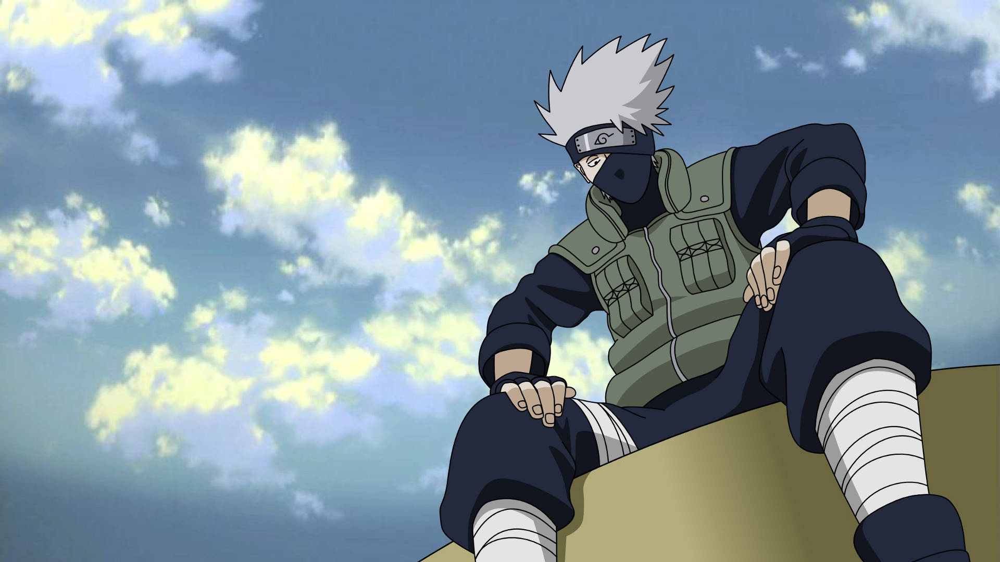
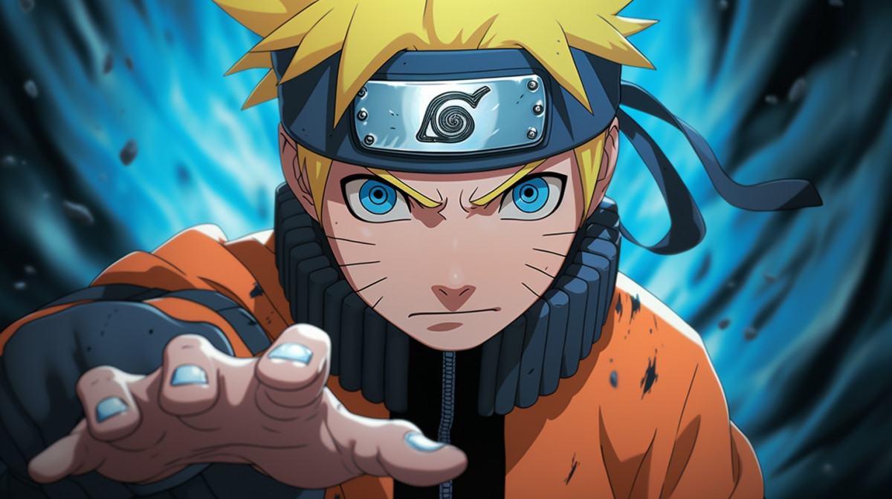

-
“A place where someone still thinks of you; that's a place you can
call Home.”
-
“Time doesn't heal anything, it just teaches us how to live with
pain.”
-
“When A Man Learns To Feel Love, He Must Also Bear The Risk Of
Hatred.”
-
“Wake up to reality! Nothing ever goes as planned in this accursed
world.The longer you live, the more you realize that the only things
that truly exist in this reality are merely pain, suffering and
futility”
- "You must forget about the Past to think of your Future."
- "Once you question your own Belief, it's Over"
- “In Life, Nothing good comes out of Hurrying”
— Jiraiya

— Uchiha Itachi

— Uchiha Obito
— Uchiha Madara
— Hatake Kakashi
— Uzumaki Naruto
— Nara Shikamaru